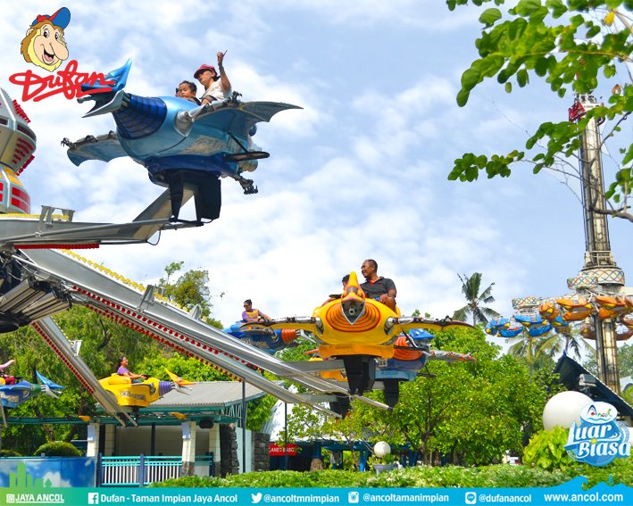
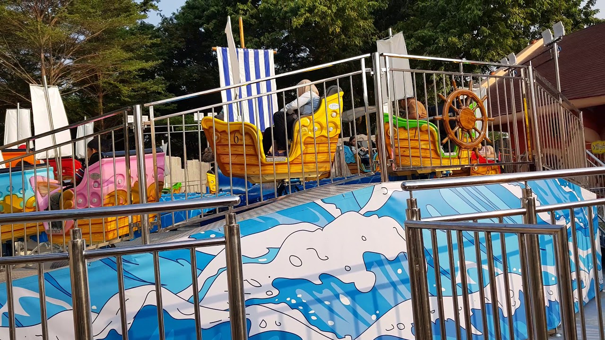
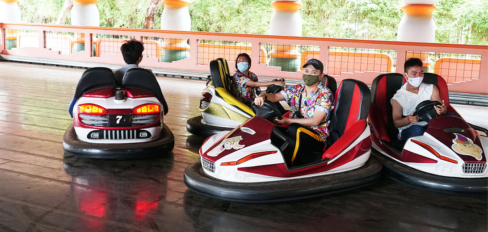
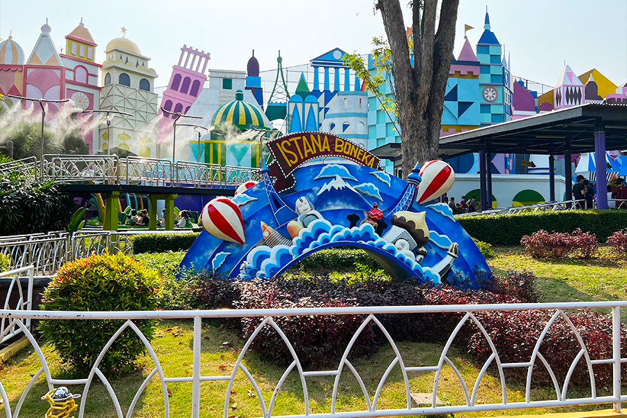
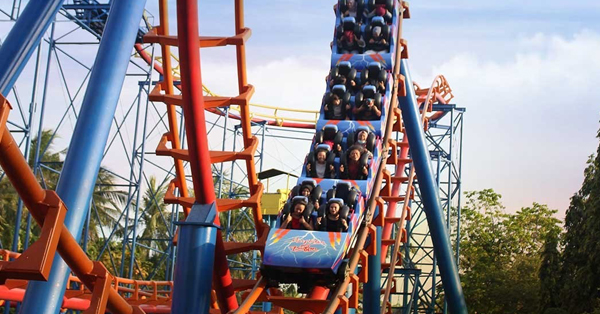
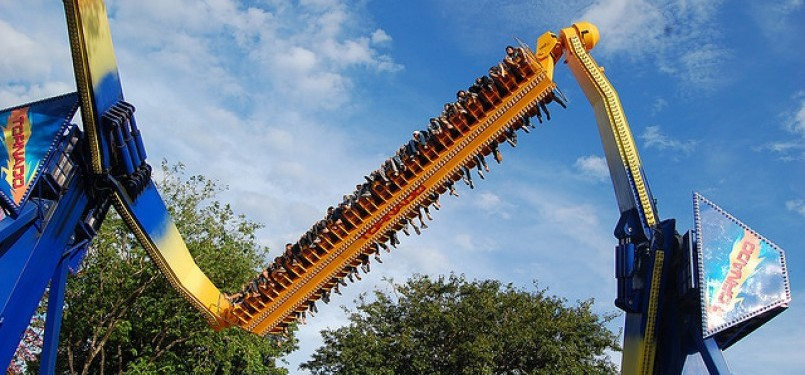
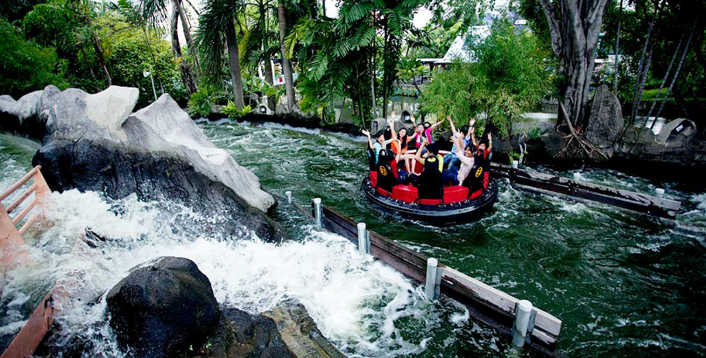

A. Wahana Dufan untuk Anak-Anak
1. Alap-Alap
Wahana kereta luncur memiliki jalur yag tak begitu tinggi serta kecepatannya pun aman untuk dinaiki oleh anak-anak. Uniknya roller coaster ini berbentuk ular sehingga membuat si kecil akan tertarik. Tak perlu khawatir, Alap-Alap tidak disertai dengan gerakan memutar hingga 360 derajat.
2. Gajah Bledug
Wahana Dufan ini akan mengajakmu dan anak-anak untuk melayang seolah-oleh menunggangi hewan terbang. Tak perlu takut akan ketinggian karena wahana ini memiliki batas ketinggian yakni hanya sampai 100cm.
3. Burung Tempur
Mirip dengan Gajah Bledug, wahana ini akan membawa si kecil naik turun dengan seperti menunggangi burung dan berputar 360 derajat. Jika anak-anak gemar menonton film Power Ranger, pasti tak asing dengan robot burung preodactyl. Wahana ini juga mirip seperti robot tersebut.
4. Kolibri
Wahana ini sangat cocok dicoba bersama si kecil. Lewat wahana Kolibri, Anda akan dibawa terbang layaknya burung kolibri menjelajahi dunia. Dilengkapi teknologi tinggi, Kolibri mengkombinasikan visual Dunia Kartun yang dikemudikan penumpang untuk berputar hingga 360 derajat dan naik turun secara pelan-pelan.
5. Karavel
Karavel merupakan wahana yang akan memberikan sensasi melayang seperti gelombang di udara dengan pergerakan 360 derajat. Memiliki kapasitas 24 orang, wahana ini diperuntukkan anak-anak.
6. Turbo Drop
Wahana yang juga diperuntukkan anak-anak ini mirip Hysteria. Anak-anak akan seolah-olah dihempaskan dengan kecepatan tinggi. Namun tenang saja, wahana ini hanya memiliki ketinggian 8 meter.
7. Paralayang
Wahana ini memberikan sensasi terbang melayang yang dikhususkan anak-anak. Orang tua tak perlu khawatir karena wahana ini dilengkapi pengaman yang mumpuni. Bahkan orang tua juga bisa menemani si kecil bermain wahana Paralayang.
8. Zig Zag
Ingin merasakan sensasi balapan bersama anak-anak Jangan lewatkan wahana Zig Zag. Wahana ini merupakan mobil bertenaga listrik yang menyerupai bumper car. Cara memainkannya pun mudah, kamu hanya perlu mengarahkan mobil untuk menjelajahi lintasan yang telah disediakan dan menghindari mobil lainnya.
9. Turangga-rangga
Ini dia wahana yang disukai oleh segala usia! Menyerupai komidi putar, Turangga-Rangga akan mengajak anak-anak berputar dan bermain peran sebagai seorang koboi. Ada banyak kuda tunggangan yang bergerak memutar disertai lagu yang menarik. Wahana ini bisa dicoba untuk orang dewasa maupun anak-anak.
10. Ontang-Anting
Salah satu wahana populer di Dufan yang juga bisa dinaiki oleh anak-anak ini akan mengajak Anda berputar dengan kecepatan sedang dari ketinggian. Wahana yang dikenal dengan nama wave swinger ini akan bergerak 360 derajat sehingga membawamu serasa melayang di udara dengan santai.
11. Istana Boneka
Usai mencoba semua wahana, kamu dan si kecil bisa bersantai sejenak di Istana Boneka. Wahana yang didesain bergaya Eropa klasik memberikan petualangan menjelajahi budaya nusantara dan mancanegara dengan menyaksikan 600 boneka yang unik dengan naik perahu. Siap-siap berlayar menjelajahi terowongan yang penuh dengan boneka!
B. Wahana Ekstrem Dufan
1. Halilintar
Wahana Halilintar merupakan roller coaster dengan lintasan tanjakan, turunan, putaran hingga 360 derajat, dan tikungan dengan kecepatan tinggi. Berteriaklah sekencang mungkin untuk melepas penat!
2. Tornado
Rasakan sensasi berputar hingga jungkir balik di udara lewat wahana Tornado. Ketika wahana dimulai, kamu akan terangkat ke tas dan perlahan berputar 360 derajat dengan kecepatan yang terus meningkat.
3. Hysteria
Cobalah uji keberanian dengan naik wahana Hysteria. Kamu akan dibawa ke puncak setinggi 60 meter hanya dalam 4 detik. Kemudian dihempaskan ke bawah dengan cepat secara berulang kali. Dijamin jadi pengalaman yang tak terlupakan!
4. Niagara-Gara
Dufan juga menghadirkan wahana air Niagara-Gara. Cobalah sensasi berseluncur dengan arus kencang seperti di sungai-sungai Amerika. Kamu akan diajak naik perahu kayu kemudian meluncur kencang mengikuti arus air. Makin seru, Anda akan dibawa terjun dari ketinggian 20 meter.
5. Arung Jeram
Kamu bisa mencoba pengalaman arung jeram di wahana Arum Jeram. Rasakan sensasi Arum Jeram sungguhan dengan jeram yang panjangnya hingga 325 meter. Jangan sepelakan keseruannya karena wahana ini dibuat mirip seperti mengarungi sungai sungguhan dengan teknologi pompa air 1.000 liter/detik.